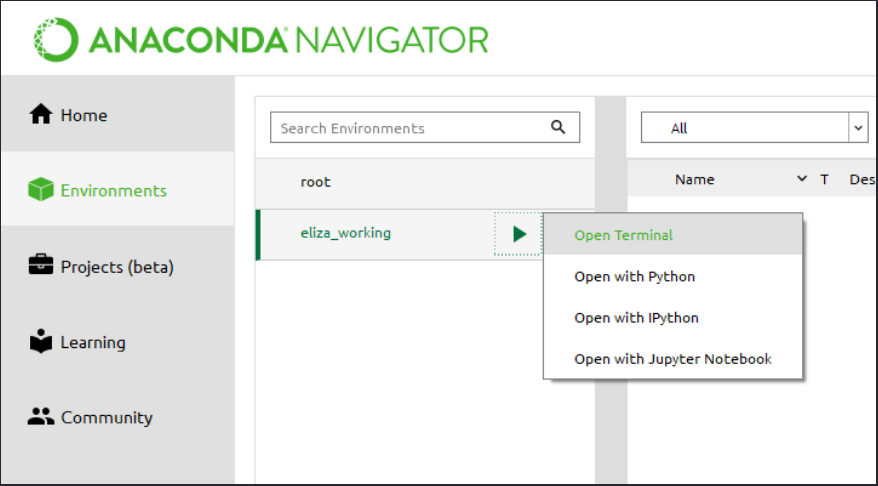

Instalar Streamlit
Índice
Pré-requisitos
Antes de começar, você vai precisar de algumas coisas:
- Seu IDE ou editor de texto favorito
- Python 3.7 - Python 3.9
- PIP
Se ainda não o fez, reserve alguns minutos para ler os conceitos principais para entender o modelo de fluxo de dados do Streamlit.
Configure seu ambiente virtual
Independentemente da ferramenta de gerenciamento de pacotes que você está usando, recomendamos executar os comandos desta página em um ambiente virtual. Isso garante que as dependências extraídas do Streamlit não afetem nenhum outro projeto Python em que você esteja trabalhando.
Abaixo estão algumas ferramentas que você pode usar para gerenciamento de ambiente:
Instale o Streamlit no Windows
O gerenciador de ambiente com suporte oficial do Streamlit no Windows é o Anaconda Navigator .
Instalar o Anaconda
Se você ainda não instalou o Anaconda, siga as etapas fornecidas na página de instalação do Anaconda .
Crie um novo ambiente com Streamlit
Em seguida, você precisará configurar seu ambiente.
-
Siga as etapas fornecidas pelo Anaconda para configurar e gerenciar seu ambiente usando o Anaconda Navigator.
-
Selecione o ícone "▶" ao lado do seu novo ambiente. Em seguida, selecione "Abrir terminal":
 -
No terminal que aparece, digite:
-
Teste se a instalação funcionou:
O aplicativo Hello da Streamlit deve aparecer em uma nova aba no seu navegador!
Use seu novo ambiente
-
No Anaconda Navigator, abra um terminal em seu ambiente (veja a etapa 2 acima).
-
No terminal que aparece, use o Streamlit como de costume: